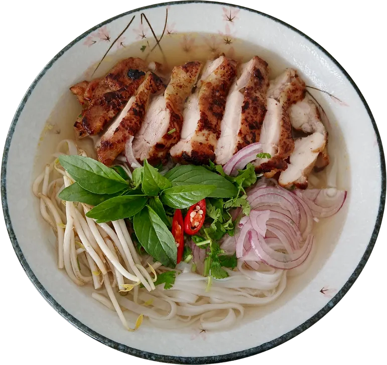
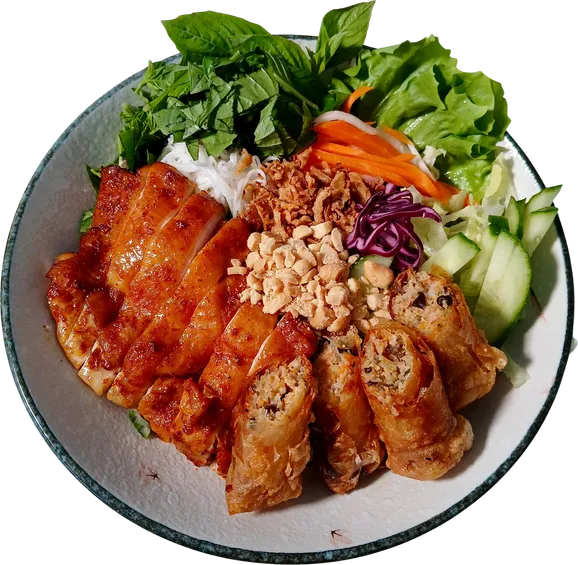
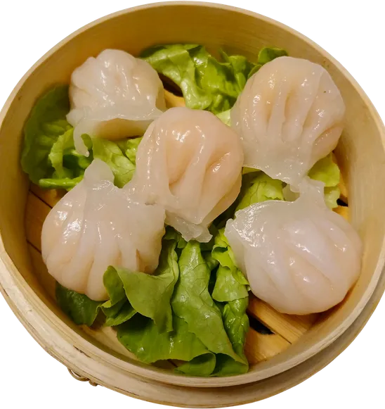
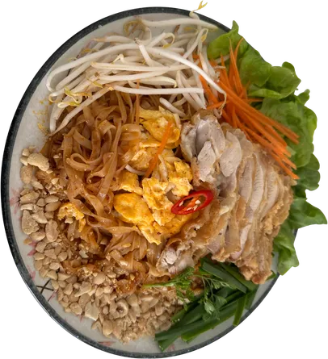
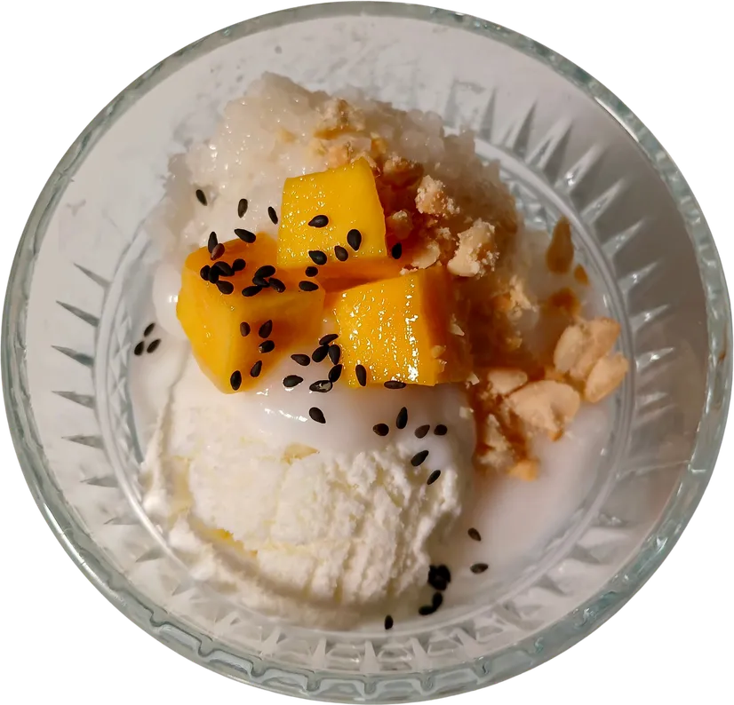
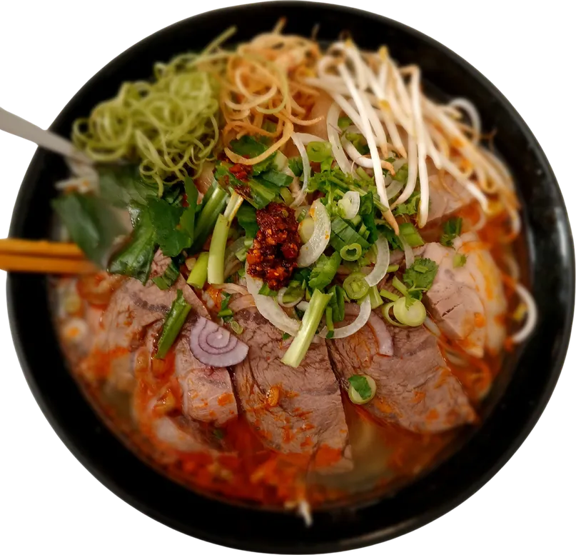
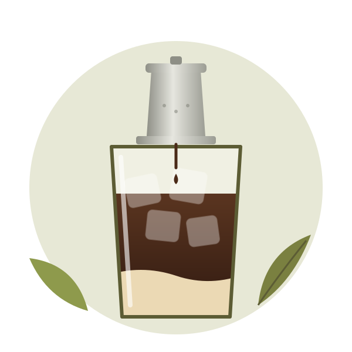
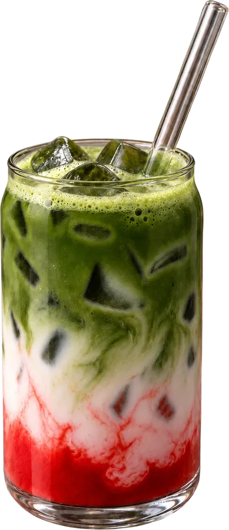
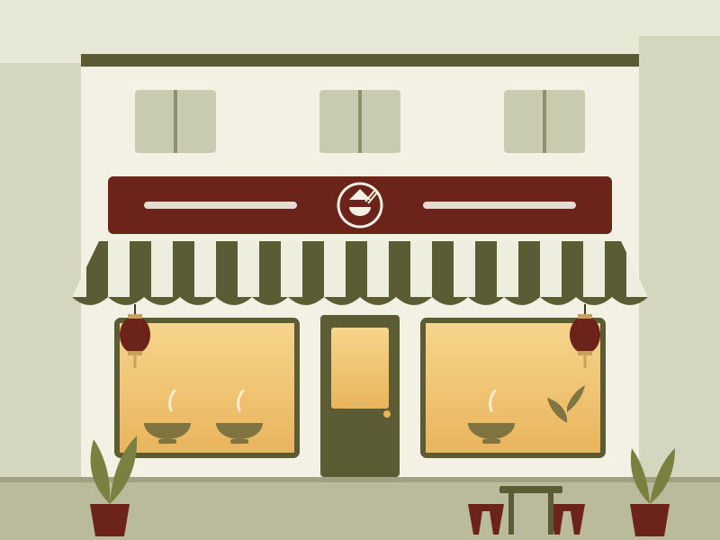
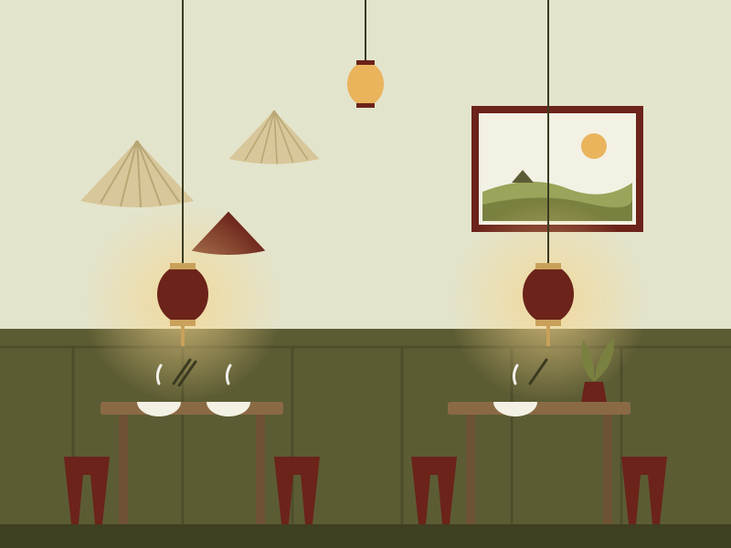

Saigon-Küche in der Karl-Marx-Straße
Cô Tâm ist ein kleines Familienbistro. Unsere Köchin und unser Inhaber kommen aus Saigon und kochen vietnamesisch und thailändisch – Phở, Bánh Mì, Bún, Currys und mehr.
Öffnungszeiten

Unsere Klassiker
Wischen Sie durch eine kleine Auswahl. Fast alles gibt es auch mit Tofu.
-

Phở
Reisbandnudeln in hausgemachter Brühe, mit Limette, Sprossen und Kräutern. Mit Rind, Huhn oder vegetarisch.
-
Bánh Mì
Knuspriges Baguette, hausgemachte Paté, Gemüse und Kräuter. Fünf Füllungen zur Wahl.
-

Bún
Reisnudeln mit Gegrilltem, Frühlingsrollen, Kräutern, Erdnüssen und Fischsoße.
-

Há Cảo
Zarte, gedämpfte Teigtaschen mit Garnelenfüllung und Dip.
-

Pad Thai
Gebratene Reisnudeln mit Gemüse, Ei und Erdnüssen in würzig-süß-saurer Soße.
-

Kem Xôi
Cremiges Kokosnuss-Eis auf warmem, süßem Klebreis mit gerösteten Erdnüssen.

Mehr als eine Mahlzeit
„In Vietnam ist eine gute Suppe mehr als nur eine Mahlzeit. Unsere hausgemachten Brühen werden mit Zeit, Sorgfalt und ausgewählten Zutaten zubereitet, um Ihnen ein Stück vietnamesischer Esskultur zu servieren.“
Probieren Sie unsere Signature-Phở Bò oder die würzig-scharfe Bún Bò Huế aus Rinder- und Schweinebrühe.
Cà Phê & Matcha
Vietnamesischer Kaffee tropft bei uns langsam durch den Phin-Filter – heiß als Cà Phê Phin oder auf Eis mit Kondensmilch als Cà Phê Sữa Đá.
Matcha Latte gibt es pur oder mit Erdbeere, Mango, Blaubeere, Pfirsich und Kokos.


Das Bistro

